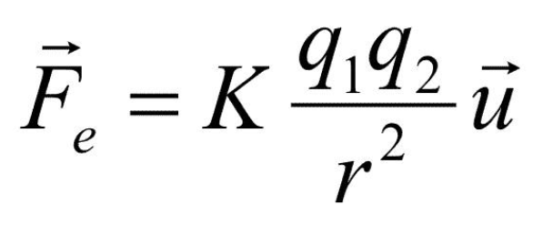
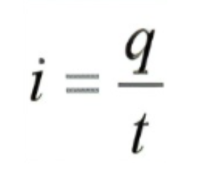
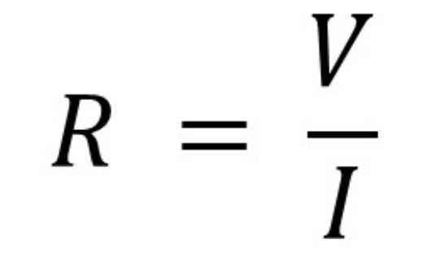
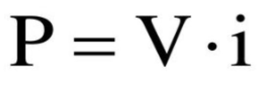
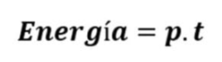

Conceptos Fundamentales en los Circuitos Eléctricos
Los conceptos fundamentales en los circuitos eléctricos incluyen voltaje, corriente, resistencia, potencia, entre otros...
Conceptos Fundamentales
Carga Eléctrica
La carga eléctrica es una propiedad de las partículas subatómicas como protones y electrones. Los protones tienen carga positiva y los electrones carga negativa. Esta propiedad hace que las partículas se atraigan o se repelan entre sí. La carga se mide en culombios (C), y un electrón tiene una carga de aproximadamente 1.602×10−19 C. La carga eléctrica no se crea ni se destruye, solo se transfiere de un objeto a otro.
Corriente Eléctrica
La corriente eléctrica es el flujo de cargas eléctricas a través de un material conductor, como un alambre. Se mide en amperios (A). Un amperio es la cantidad de carga que pasa por un punto en un segundo. La corriente puede ser continua (CC) si fluye en una sola dirección, o alterna (CA) si cambia de dirección periódicamente.
Voltaje (Diferencia de Potencial)
El voltaje es la diferencia de potencial eléctrico entre dos puntos. Es lo que impulsa a las cargas eléctricas a moverse en un circuito, similar a cómo la presión impulsa el agua a través de una tubería. Se mide en voltios (V). Un voltio es la cantidad de energía necesaria para mover un coulomb de carga a través de un circuito.
Resistencia Eléctrica
La resistencia eléctrica es la oposición al flujo de corriente en un material. Se mide en ohmios (Ω). Un material con alta resistencia dificulta el paso de la corriente, mientras que un material con baja resistencia permite que la corriente fluya fácilmente. La resistencia depende del material, su tamaño y temperatura.
Potencia Eléctrica
La potencia eléctrica es la cantidad de energía que se consume o se produce en un dispositivo eléctrico por unidad de tiempo. Se mide en vatios (W). Un vatio es la cantidad de energía usada por un dispositivo cuando una corriente de un amperio fluye con un voltaje de un voltio. La fórmula básica es: P = V × I donde P es la potencia, V es el voltaje, e I es la corriente.
Energía Eléctrica
La energía eléctrica es la capacidad de realizar trabajo mediante la electricidad. Se mide en julios (J) o en kilovatios-hora (kWh) para aplicaciones prácticas. La energía eléctrica se utiliza para alimentar dispositivos como luces, motores y electrodomésticos. La fórmula para calcular la energía es: E = P × t donde E es la energía, P es la potencia, y t es el tiempo.
Estos conceptos básicos forman la base de la comprensión de la electrónica y los circuitos eléctricos.